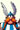
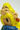
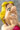

Bem-vindo ao Whac-A-Mole
Prepare-se para o desafio: acerte o máximo de toupeiras possível antes que o tempo acabe!
Recordes - Top 10
| Colocação | Nome | Pontos | Data | Foto |
|---|---|---|---|---|
| 1 | Asterix | 512 | 20/07/2019 |  |
| 2 | Obelix | 265 | 01/01/2002 | |
| 3 | Panoramix | 108 | 26/06/2009 | |
| 4 | Falbala | 64 | 02/04/2005 | |
| 5 | Chatorix | 32 | 12/07/2010 |  |
| 6 | Ideafix | 16 | 17/11/2014 | |
| 7 | Veteranix | 8 | 12/11/2019 | |
| 8 | Naftalina | 4 | 25/07/2018 |  |
| 9 | Automatix | 2 | 04/02/2004 | |
| 10 | Ielosubmarina | 1 | 28/07/2019 |
Regras do Jogo
- Acerte a toupeira quando ela aparecer no buraco.
- Ganhe pontos por cada acerto.
- O tempo é limitado, então seja rápido!
Tabuleiro
Acesse a página do tabuleiro para jogar:
Ir para o tabuleiro